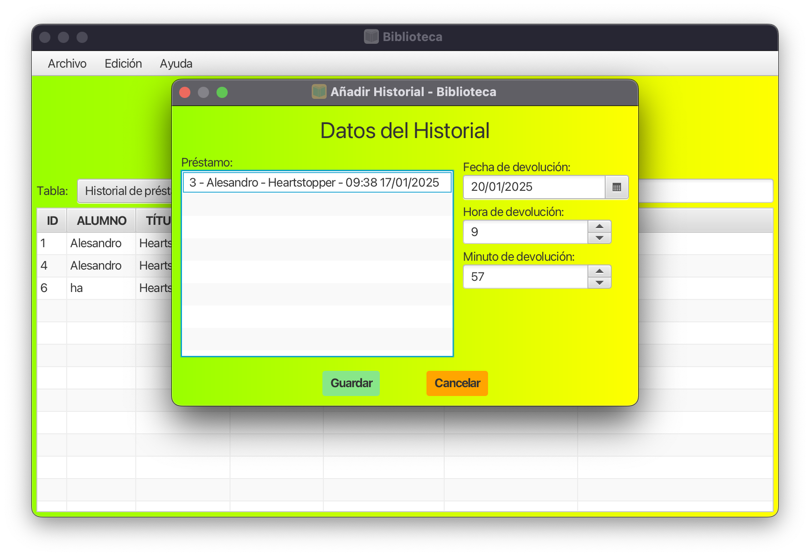
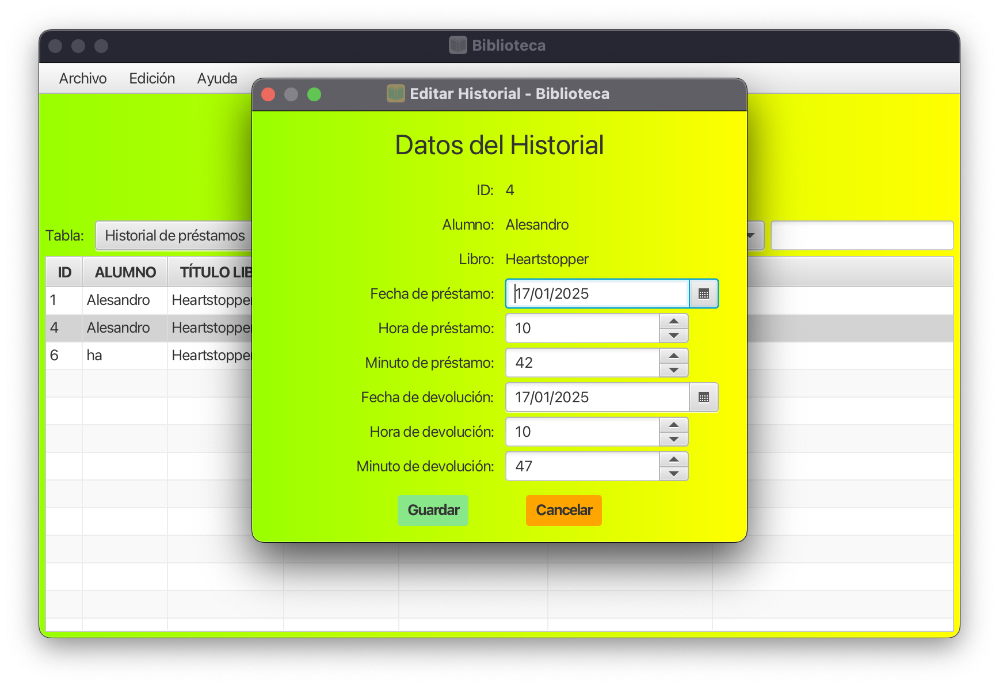

Gestión de Historial de Préstamos
Añadir préstamos
- Seleccionar un Préstamo: Haga clic en un elemento en la lista para seleccionarlo.
- Establecer Fecha y Hora de Devolución:
- Utilice el DatePicker para elegir una fecha.
- Ajuste las horas y minutos usando los spinners correspondientes.
- Guardar Cambios: Presione el botón "Guardar" para aplicar los cambios realizados.
- Cancelar Operación: Si desea salir sin guardar, presione el botón "Cancelar".
Consideraciones
Asegúrese de verificar que todos los campos estén correctamente llenos antes de guardar. La interfaz está diseñada para ser intuitiva, pero si encuentra algún problema, consulte con el soporte técnico.

Editar préstamos
Cómo Usar
- Visualización de Datos: Los campos ID, Alumno y Libro mostrarán la información automáticamente.
- Fecha de Préstamo:
- Haz clic en el campo de fecha para abrir un calendario.
- Selecciona la fecha correspondiente al préstamo.
- Hora de Préstamo: Utiliza los spinners para ajustar la hora y los minutos del préstamo.
- Fecha de Devolución: Similar a la fecha de préstamo, selecciona la fecha de devolución del libro.
- Hora de Devolución: Ajusta la hora y los minutos de la devolución usando los spinners correspondientes.
Acciones Disponibles
En la parte inferior de la vista, encontrarás dos botones:
- Guardar: Guarda los cambios realizados en el registro del préstamo.
- Cancelar: Cierra la vista sin guardar los cambios.
Consejos Adicionales
- Pasa el cursor sobre los campos de fecha para ver información adicional (tooltips).
- Asegúrate de que la información sea precisa antes de guardar los cambios.
- Si cometes un error, puedes usar el botón "Cancelar" para evitar modificaciones no deseadas.
